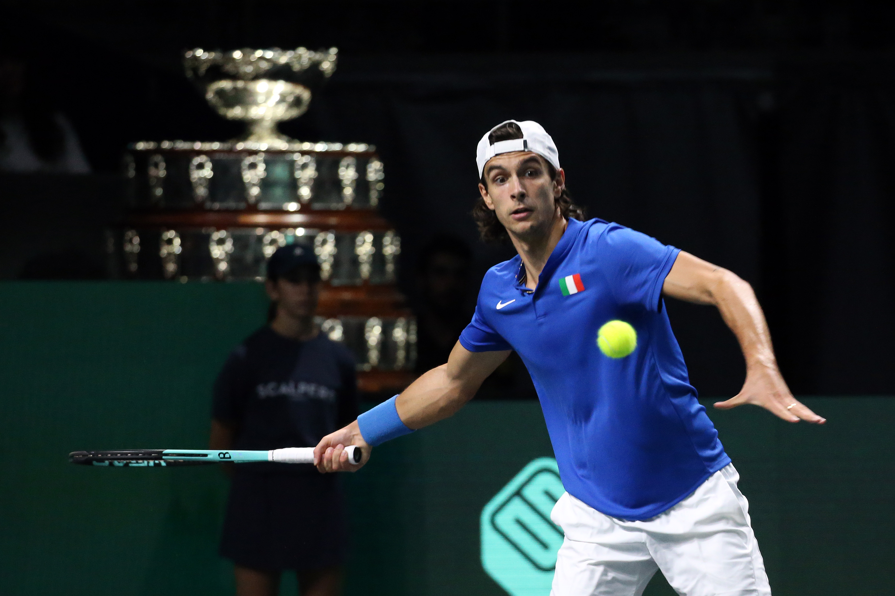

Xem lại Reel ngay tại đây — bản gốc, bản cắt chân, bản quay chậm
Video được tải về từ Reel Davis Cup: 720×1280, 30 fps, 52,7 giây (rally ~0–35 giây, đi khăn 36–52 giây). Ba phiên bản dưới đây đều phát ngay trong trang và tải xuống được: bản gốc đầy đủ, bản cắt khung dưới cơ thể (0–36 giây, chỉ tập trung vào chân) và bản quay chậm 0,5× để soi từng bước.

7 điều rút ra — chỉ về đôi chân
Không bao giờ chạm đất phẳng
Suốt rally, Musetti liên tục split-step / nảy nhẹ trên phần trước bàn chân, đế rộng, hông và gối thấp — đúng mẫu hình đỉnh cao: bắt đầu nhảy quanh thời điểm đối thủ chạm bóng, tiếp đất khi thông tin đầu tiên về đường bóng tới, và bật đi trong ~150–200 ms. [Mecheri et al.; Navia et al.]
Bước đầu tiên từ chân ngoài + xoay hông
Không phải “jab” thẳng bằng chân dẫn. Cơ chế pivot / gravity drop-step — đưa chân dẫn hơi vào trong để trọng tâm rơi ra ngoài đế đỡ — thắng jab step trong nghiên cứu kiểm soát duy nhất hiện có về khả năng chạm bóng và kiểm soát bóng trả, dù người tham gia đã được huấn luyện trước về gravity step. [Bragg & Andriacchi 2001]
Shuffle cho ngắn, crossover cho xa — kỹ năng là lúc chuyển đổi
Shuffle giữ thân vuông, thăng bằng cho điều chỉnh 1–3 sải; crossover đi xa nhanh hơn và dẫn động hồi vị. Mẫu hình được mô tả của Musetti — shuffle khi ngắn, crossover khi hồi vị xa — đúng hệ thống phân cấp đồng thuận trong ngôn ngữ iTPA/Kovacs.
1–2 mét cuối quyết định khoảng cách
Các bước stutter nhỏ trước khi chạm bóng không phải “thừa” — chúng đặt khoảng cách cơ thể–bóng. Với người đánh trái một tay, điều này quyết định tất cả, vì cú trái một tay khó chịu và mất ổn định ở thế mở, cần bước vào neutral/closed. [Feel Tennis; đồng thuận huấn luyện]
Thế đứng theo thời gian, không theo sở thích
Thuận tay mở / bán mở khi bị ép rộng hoặc vội (dồn lực chân ngoài, hồi vị nhanh); bước vào neutral/closed cho trái một tay khi có thời gian (truyền lực tuyến tính, có thời gian xoay vai).
Hồi vị = crossover → shuffle → split lại
Ngay sau chạm bóng: crossover về trung tâm, shuffle tinh chỉnh, split lại trước khi đối thủ đánh. Chuẩn đỉnh cao: ~3–5 lần đổi hướng mỗi điểm, ~5–6 m mỗi rally, ~3,2 km mỗi trận trong một nghiên cứu theo dõi [Pereira et al.]; tỷ lệ di chuyển kinh điển 70% ngang / 20% tiến / 10% lùi (Kovacs/Weber).
Trên sân cứng trong nhà: phanh thay cho trượt
Gập gối nhiều hơn để phanh trên acrylic ma sát cao, thay vì duỗi chân trượt như đất nện [Damm et al. 2013]. “Cú plant phanh” được mô tả trong clip chính là sự thích nghi mặt sân mà văn liệu sinh cơ học dự đoán ở một tay vợt lớn lên trên đất nện. Chiếc băng gối chỉ là lời nhắc chung về tải lên gối/mắt cá — không phải chẩn đoán.
Vòng lặp footwork của một rally
Rally không phải một chuỗi rời rạc — nó là một vòng lặp khép kín. Chọn từng pha để xem đôi chân làm gì, vì sao quan trọng, và từ khóa huấn luyện tương ứng. Thuật ngữ theo Kovacs / iTPA.
Cách đọc bảng dưới đây: các hàng là thứ tự pha suy ra từ mô tả khung hình trong nhiệm vụ nghiên cứu, ánh xạ lên thuật ngữ footwork đã công bố — không phải số đo đã kiểm chứng từng khung hình. Báo cáo nghiên cứu không đếm khung hình độc lập ở tốc độ khung hình đã biết, nên không hàng nào nên được đọc như quan sát trực tiếp đã xác thực đến từng khung.
| Pha | Đôi chân làm gì (theo mô tả khung hình trong nhiệm vụ nghiên cứu — suy ra theo thứ tự pha) | Thuật ngữ | Vì sao quan trọng |
|---|---|---|---|
| Ready / Split | Nảy nhẹ trên phần trước bàn chân, đế rộng, gót nhẹ, gối mềm — trước mỗi lần đối thủ chạm bóng | Split step | Nạp trước chu trình kéo–co (stretch-shortening); tiếp đất đúng lúc đối thủ đánh giúp bước đẩy đầu tiên dùng được thông tin đường bóng đầu tiên |
| Di chuyển | Bước đầu bùng nổ từ chân ngoài; shuffle khi ngắn, crossover khi rộng hơn | Pivot / gravity first step → shuffle hoặc front crossover | Đẩy từ chân ngoài + xoay hông đưa trọng tâm về phía bóng sớm hơn jab step |
| Điều chỉnh | Bước stutter nhỏ ở 1–2 m cuối, chân luôn dưới hông, đầu giữ ngang | Adjustment steps | Đặt khoảng cách cơ thể–bóng mà không lao người; sống còn với trái một tay |
| Nạp lực | Thuận: mở/bán mở, chân ngoài (phải) chịu lực, hông thấp. Trái: bước vào neutral/closed, chân phải lên trước | Open / semi-open forehand load; neutral/closed backhand step-in | Mở = lực xoay + hồi vị nhanh; bước vào đóng = truyền lực tuyến tính + thời gian xoay vai cho trái một tay |
| Hồi vị | Crossover về trung tâm, rồi shuffle, về sau vạch baseline | Front crossover recovery → shuffle → re-split | Crossover lo khoảng cách; shuffle khôi phục đế vuông; split lại khởi động vòng mới |
| Lặp lại | Split lại trước lần chạm bóng tiếp theo của đối thủ — không đứng phẳng chân giữa các cú đánh | Re-split | Toàn bộ rally là vòng lặp: split → move → adjust → load → recover → split |
| Lùi bắt overhead | Xoay người chạy (xoay ngang, crossover lùi), không lùi dài kiểu backpedal | Drop-step turn → backward diagonal crossover | Nhanh hơn, thăng bằng hơn và an toàn hơn hẳn backpedal đối mặt lưới |
| Phanh | Bước plant ngắn, gối gập hấp thụ lực, không trượt dài — xuyên suốt trên sân cứng | Braking plant (hard court) | Ma sát giày–sân cao: phanh bằng gập khớp thay vì trượt (xem mục 7) |
| 36–52 giây | Đi bộ ra lấy khăn, nhịp nảy trên mũi chân tắt hẳn | — (ngoài rally) | Sự tương phản làm lộ rõ trạng thái “sẵn sàng” trong rally: nó được bật/tắt có chủ đích |
⚠ Góc quay thấp sát sân phóng đại độ rộng đế và độ gập gối, đồng thời che khuất chiều sâu (Musetti hồi vị sau baseline bao xa). Mọi khẳng định về chiều sâu chỉ từ góc này đều không đáng tin — xem mục phân tích video ở cuối.
Nhảy đúng lúc đối thủ đánh, tiếp đất khi bóng vừa lộ hướng
Split step là cú nhảy hai chân nhỏ, căn theo thời điểm đối thủ chạm bóng, tiếp đất trên phần trước bàn chân trong tư thế rộng, thấp, sẵn sàng đẩy đi mọi hướng. Kovacs lưu ý: vận động viên giỏi không tiếp đất hai chân cùng lúc — họ phản ứng ngay trên không và chạm đất bằng chân xa mục tiêu hơn trước một tích tắc.
Dòng thời gian đo được khi trả giao bóng — Navia et al. 2022 Peer-reviewed
12 chuyên gia nam, sân cứng, phân tích 300 Hz, mốc 0 = vợt đối thủ chạm bóng. Giá trị rally thực tế sẽ khác — dùng làm tham chiếu, không phải chuẩn đậu/rớt.
Mecheri et al. — J Sports Sciences 2019
Mọi nhóm (ATP/WTA đỉnh cao và trẻ ITF) đều bắt đầu split quanh thời điểm đối thủ chạm bóng và tiếp đất khi thông tin đường bóng sớm đã có. Độ cứng chân tăng theo trình độ; ở nam đỉnh cao, thời điểm bước chân đầu tiên tương quan với độ cứng chân (r² = 0,54) — chân “cứng” hơn cho phép bước muộn hơn vì dựa trên thông tin đáng tin hơn. Navia: khi di chuyển bắt đầu sau thời điểm chạm bóng, không có lỗi phản ứng nào.
Chiều cao & tiếp đất — ít được đo trực tiếp hơn
Các tổng hợp huấn luyện thứ cấp đưa ra: cao ~5–10 cm, tiếp đất rộng hơn vai một chút, trọng lượng trên mũi chân, gối gập ~20–30°, thời gian chạm đất (tiếp đất → bật đi) dưới ~200 ms ở đỉnh cao so với 250–350 ms ở người chơi phong trào. Lưu ý: văn liệu gốc ủng hộ mạnh các khẳng định về thời điểm và độ cứng chân hơn bất kỳ con số centimet cụ thể nào. Từ khóa trên sân: “nhảy theo cú vung của họ, tiếp đất theo cú đánh của họ.”
Vì sao hiệu quả — và điểm bất đồng
Tiếp đất kéo căng trước cơ đùi, bắp chân, cơ duỗi hông; nếu bật đi ngay, chu trình kéo–co trả lại năng lượng đàn hồi — chậm là năng lượng tản thành nhiệt. Vì phản xạ thị giác đơn giản đã ~200 ms, split phải được chuẩn bị trước khi biết hướng. Bất đồng: một số HLV hô “tiếp đất đúng lúc chạm bóng”, trong khi dữ liệu trả giao bóng cho thấy tiếp đất đỉnh cao ở sau chạm bóng (~130 ms). Hai điều không mâu thuẫn nếu hiểu “đúng lúc” là bắt đầu nhảy lúc chạm bóng — nhưng hô tiếp đất trước chạm bóng sẽ làm năng lượng nạp rò rỉ trước khi có thông tin hướng.
Áp vào Musetti: “split-step / nảy nhẹ liên tục trên mũi chân, đế rộng, không bao giờ phẳng chân” chính là chữ ký nhìn thấy được của mẫu Mecheri/Navia — split lại trước mọi lần đối thủ chạm bóng trong suốt 35 giây rally, không chỉ một lần đầu rally. Trên sân cứng trong nhà, bóng đi nhanh sau khi nảy, nên tiếp đất ngay sau chạm bóng (thay vì sớm hơn nhiều) giữ được nạp đàn hồi cho bước đầu tiên.
Shuffle hay crossover? Khoảng cách quyết định
iTPA chuẩn hóa hơn 35 kiểu di chuyển — pivot, jab, shuffle ngang, crossover trước/sau, drop-step chạy vòng đánh thuận, mogul step, crossover hồi vị… Dùng chung một ngôn ngữ quan trọng vì “shuffle” và “crossover” thường bị dạy như đối thủ, trong khi thực chất chúng là công cụ theo khoảng cách.
🧭 Công cụ chọn bước — thử ngay
Ba bước phản ứng ngang — Bragg & Andriacchi (Stanford, 2001)
- Jab step: bước trước bằng chân dẫn/ngoài về phía bóng.
- Pivot step: trụ trên chân dẫn, xoay hông, bước bằng chân đối diện.
- Gravity / drop step: đưa chân dẫn vào trong, ra xa bóng, trọng tâm rơi ra ngoài đế đỡ để trọng lực hỗ trợ chuyển động.
Kết quả (n=10 người chơi câu lạc bộ): nhóm gravity step có khả năng chạm bóng cao hơn 52% và kiểm soát bóng trả cao hơn 100% so với jab (p < ,05); trọng tâm ra ngoài đế đỡ ở ~0,15 giây (gravity) so với ~0,3 giây (pivot) và ~0,5 giây (jab). Caveat bắt buộc: người tham gia đã được huấn luyện trước về gravity step, và nghiên cứu chuyển động trong phòng lab chỉ n=1 — đây là bằng chứng hứa hẹn, chưa phải kết luận cuối cùng.
“Cua shuffle” cho mọi thứ?
Huấn luyện truyền thống mặc định shuffle kiểu cua cho mọi di chuyển ngang. Một phân tích huấn luyện 2026 lập luận ngược lại: crossover sớm cho mọi khoảng cách đáng kể, vì giữ thân vuông trong shuffle cao người làm chậm xoay hông và có thể dồn tải lên gối ở tư thế plant thẳng đứng dễ tổn thương. Cách đọc cân bằng của báo cáo: shuffle không sai — nó có giới hạn. Điều chỉnh nhỏ = shuffle; khoảng cách vừa = shuffle kèm xoay hông; quãng đường lớn = crossover ngay. Mẫu của Musetti (shuffle ngắn, crossover rộng/hồi vị) nằm đúng hệ thống cân bằng này.
Musetti thích nghi thế nào — tay vợt đất nện trên sân cứng trong nhà?
Musetti được mô tả rộng rãi là “clay-first”: “trên đất nện, lối chơi của Musetti hiệu quả nhất… di chuyển xuất sắc” [LiveTennis]; “một dirtballer đích thực… di chuyển chính xác và đa năng” [Second Serve]. Cú plant phanh trên sân cứng được mô tả trong clip (thay vì trượt đất nện) và lựa chọn shuffle/crossover ngắn — thay vì hồi vị trượt dài — phù hợp với một tay vợt lớn lên trên đất nện đang rút ngắn bước phanh cho mặt sân ma sát cao. Không có dữ liệu lực phản lực mặt đất (GRF) riêng cho Musetti trong nghiên cứu đã bình duyệt nào được tìm thấy — đây là suy luận từ sinh cơ học mặt sân + mẫu hình quan sát được, và được ghi nhãn như vậy.
1–2 mét cuối — nơi cú trái một tay được cứu hoặc bị phá
Bước điều chỉnh làm gì?
Các bước stutter nhỏ ở 1–2 m cuối là kiểm soát khoảng cách tới bóng. Chẩn đoán huấn luyện nói thẳng: người chơi “lao một bước lớn thay vì hai–ba bước điều chỉnh nhỏ gần như luôn có vấn đề về khoảng cách”. Quá gần → kẹt cú vung (tay không duỗi được); quá xa → phải với, mất thăng bằng và kiểm soát mặt vợt.
Vì sao trái một tay khiến yêu cầu cao hơn hẳn
Feel Tennis nêu ràng buộc cốt lõi: cú trái một tay khó chịu khi đánh ở thế mở (mất ổn định, thiếu lực), khác hẳn thuận tay và trái hai tay vốn hoạt động tốt ở thế mở. Vì vậy footwork của người đánh một tay phải “kỹ nghệ hóa” một bước vào neutral hoặc closed mỗi khi có thể. Chính Musetti, trong clip US Open, liệt kê “bí quyết” trái tay của mình: (1) chuẩn bị sớm, (2) chân phải lên trước và tì lên chân phải, (3) chuyển động mượt mà — tức vị trí chân và truyền trọng lượng được chính tay vợt trình bày như điều kiện tiên quyết, không phải phụ kiện.
Mẫu theo khoảng cách (Feel Tennis)
- Ngắn (1 bước): cùng mẫu neutral 1 bước cho cả hai phía.
- Vừa (2–4 m, 2 bước — tình huống đơn phổ biến nhất): thuận/trái hai tay dùng 2 bước vào thế mở; trái một tay dùng “shuffle rồi bước vào” — shuffle ngang nhanh rồi bước vào neutral. Bỏ shuffle → lao người hoặc nhồi 3 bước và đánh muộn.
- Rộng (3 bước): cả hai phía dùng 1-2-3 (crossover → bước → plant), nhưng trái một tay vẫn ưu tiên về neutral để kiểm soát/lực.
- Bóng sâu: thuận tay có thể đánh mở khi lùi; trái một tay nên “lùi ra rồi bước vào” (2 bước lùi tạo khoảng, 1 bước tiến về neutral) nếu có thời gian.
- Bóng ngắn: xoay người trước, rồi shuffle, rồi bước vào và ổn định — chạy trước, xoay muộn là lỗi kinh điển.

Mở, bán mở, hay bước vào đóng?
Định nghĩa theo hướng hông lúc chạm bóng: mở = hông/rốn hướng lưới; bán mở = hông ~45° so với lưới; đóng = hông vuông góc lưới (hướng biên dọc). Chọn từng thế để so sánh vị trí chân, nguồn lực và tốc độ hồi vị.
Crossover lo khoảng cách, shuffle lo độ chính xác, split lo sự sẵn sàng
Sau chạm bóng: (1) crossover hồi vị phía trước — đẩy qua chân ngoài, bắt chéo về trung tâm; (2) shuffle tinh chỉnh vị trí sau baseline; (3) split lại trước khi đối thủ chạm bóng. Với vị trí phòng thủ rất rộng, iTPA còn liệt kê mogul step (xoay mũi chân vào trong nhanh và chuyển trọng lượng về trung tâm, như trong các phân tích về Nadal) và hồi vị phòng thủ 180°.
Quãng đường trung vị mỗi rally
5,2 m khi giao bóng, 6,2 m khi trả giao — Pereira et al., J Sports Sciences 2017, theo dõi tự động 8 tay vợt chuyên nghiệp.
Tổng quãng đường mỗi trận (± 880 m)
1.702 m ở set 1 và 1.458 m ở set 2 trong cùng nghiên cứu Pereira et al. Một tổng hợp khác (dữ liệu ATP 2016) đưa ra ~4,5 km/trận — hai con số khác nhau do mẫu, phương pháp theo dõi và độ dài trận khác nhau; báo cáo giữ cả hai, không gộp trung bình thành độ chính xác giả.
Đổi hướng mỗi điểm
~360–600 lần trong một trận hai set (~60 game điểm/set theo tổng hợp văn liệu thể lực). Rally trung vị trên sân cứng: 3,5–4,5 cú đánh, mỗi cú đòi hỏi một vòng split → bước đầu → điều chỉnh/nạp → hồi vị trọn vẹn.
Tỷ lệ hướng di chuyển kinh điển — Weber et al. 2006 / Kovacs 2009
Dữ liệu ATP 2016 trong cùng tổng hợp: ~20 m trung bình mỗi điểm, ~42 m cho rally từ 5 cú đánh trở lên. Dấu hiệu đỉnh cao không nằm ở tổng quãng đường mà ở thời gian hồi vị: người shuffle toàn bộ quãng về sẽ đến muộn; người chỉ crossover sẽ về trong trạng thái mất thăng bằng.
Xoay người trước — cả khi lao lên bóng ngắn lẫn khi lùi bắt bóng lob
Lên bóng ngắn (~20% tổng di chuyển)
Mẫu cho cả hai phía: xoay người và bước tiến → shuffle → bước vào và ổn định. Xoay trước (unit turn bắt đầu lúc đối thủ chạm bóng, cùng thời điểm tiếp đất split), rồi mới di chuyển. Chạy thẳng vào bóng và xoay muộn sẽ làm khoảng cách bị vội. Chính 20% này quyết định bóng ngắn được tấn công trong thăng bằng hay bị lao vào.
Lùi bắt overhead — đồng thuận huấn luyện mạnh
- Không bao giờ backpedal dài đối mặt lưới (ngực hướng lưới, gót hướng baseline). Essential Tennis: backpedal “chậm và nguy hiểm… lỗi số 1 của người chơi phong trào ở cú overhead”.
- Xoay ngang trước: tay phải thì thả chân phải ra sau chân trái (trụ vào thế đóng/ngang, mũi chân hướng hàng rào bên), rồi lùi bằng shuffle ngang hoặc crossover, vợt giơ sớm, tay không cầm vợt giơ lên bám bóng.
- Kế hoạch USTA dạy drop-step, crossover và chạy cho overhead — thứ tự luôn là xoay trước, di chuyển sau.
- An toàn: backpedal trong lúc ngửa nhìn bóng có nguy cơ ngã ngửa và chấn thương đầu; xoay ngang giữ thăng bằng và cho phép truyền lực lùi→tiến lúc chạm bóng.
Áp vào clip: “xoay người chạy (không backpedal dài) khi bị đẩy lùi bắt overhead” khớp chính xác mẫu đồng thuận: xoay ngang, crossover lùi, chạm bóng phía trước, rồi bước trở vào và split lại.
Giày bám sân — nên cơ thể phải hấp thụ lực phanh
Damm et al. — Sports Biomechanics 2013
8 người tham gia, nhảy ngang + thuận tay chạy, đất nện so với sân cứng acrylic có đệm: người chơi điều chỉnh ma sát sử dụng theo mặt sân — gập gối ít hơn tạo điều kiện trượt trên đất nện, trong khi gập gối nhiều hơn góp phần phanh trên sân cứng. Gối cũng ít gập hơn lúc chạm đất và ở đỉnh gập trên đất nện khi đánh thuận tay chạy.
Starbuck et al. — J Sports Sciences 2016
Xoay 180° trên acrylic so với đất nện: thích nghi vận động học và áp lực bàn chân theo mặt sân (áp lực mũi chân/ngón cái cho phép trượt trên đất nện); người chơi có kinh nghiệm đất nện có đỉnh gập gối muộn hơn — tác giả gợi ý điều này có thể giảm tải / nguy cơ chấn thương.
| Yếu tố | Sân cứng trong nhà (clip này) | Đất nện (nền tảng của Musetti) |
|---|---|---|
| Cơ chế dừng | Plant ngắn, gập gối/hông để phanh | Trượt dài, chân tương đối thẳng hơn |
| Ma sát giày–sân | Cao — giày bám, cơ thể hấp thụ giảm tốc qua gập mắt cá/gối/hông | Thấp — lớp mặt rời cho giày trượt, trải lực dừng theo thời gian, giảm lực đỉnh |
| Hệ quả lực | Lực đỉnh cao hơn trong thời gian ngắn hơn | Lực đỉnh thấp hơn nhờ trượt kéo dài thời gian dừng |
| Kỹ năng then chốt | Ức chế cú trượt dài, thay bằng plant gập khớp | Kiểm soát độ dài trượt và dừng đúng điểm |
Bức tranh chấn thương rộng hơn
Một chuyên gia sinh cơ học tóm tắt trên MedicalXpress (2019): chấn thương gây đau có khả năng xảy ra cao hơn 5–8 lần trên mặt sân ma sát cao so với mặt sân rời cho phép trượt, trong nghiên cứu hơn 1.000 người chơi của Nigg; trên mặt sân ma sát cao, vận động viên tiếp đất với gối thẳng hơn và xoay nhiều hơn trong các động tác cắt hướng — mẫu hình liên quan đến nguy cơ ACL. Đây là tóm tắt của chuyên gia, ghi nhãn đúng như vậy. Riêng phanh-bằng-trượt trên sân cứng ở cấp đỉnh cao: một nghiên cứu 2025 (J Exercise Science & Fitness, 100 VĐV đại học đỉnh cao, truy cập qua bản ghi Scribd — nguồn yếu) báo cáo phanh trượt giảm 10% thời gian đánh bóng ngắn và 7% ở khoảng xa so với phanh truyền thống — chỉ là một nghiên cứu đơn lẻ, chưa phải kết luận đã ổn định.
Chiếc băng gối — chỉ là cân nhắc chung, không chẩn đoán
Một chiếc băng patella/gối nhìn thấy trong một khung hình không nói lên điều gì về y tế của Musetti, và báo cáo này không suy đoán. Nói chung, mẫu phanh sân cứng được mô tả (plant ngắn, gập gối để phanh, đổi hướng hàng trăm lần mỗi trận) tải lên cơ duỗi gối theo kiểu ly tâm và đòi hỏi ổn định mắt cá khi plant ngang. Cân nhắc phòng ngừa cho mẫu di chuyển này (chung, không riêng Musetti): sức mạnh ly tâm cơ đùi trước/sau để giảm tốc; sức mạnh hông/cơ mông để lực phanh được chia lên trên thay vì dồn vào gối; linh hoạt/ổn định mắt cá; tăng dần khối lượng sân cứng (nhất là khi chuyển từ block đất nện); giày đúng mặt sân. Đau, sưng hay mất ổn định đều cần đánh giá y tế có chuyên môn — băng gối không thay thế được.
Đất nện trong nhịp, trái một tay trong kỷ luật
Giới hạn nguồn — nói thẳng: không tìm thấy bài báo sinh cơ học đã bình duyệt nào về Musetti, cũng không có phân tích footwork chính thức của ATP/ITF về anh. Hồ sơ dưới đây ghép từ lời tự mô tả của tay vợt, báo chí tennis uy tín và bình luận huấn luyện — mỗi ý đều ghi loại nguồn. Nơi nguồn chỉ có tính từ (“mượt”, “duyên dáng”), báo cáo giữ nguyên là tính từ chứ không biến thành số liệu.
Tự mô tả footwork trái tay
Chuẩn bị sớm; chân phải lên trước, tì lên chân phải; chuyển động mượt mà [Reel Instagram US Open, 2025]. Hàm ý: Musetti tự khung cú trái tay như một cú đánh bước-vào / truyền trọng lượng — khớp hoàn toàn với Mục 3.
Di chuyển là điểm mạnh
“Di chuyển chính xác và đa năng, hóa giải thách thức của từng mặt sân, phòng thủ tốt trên cỏ và tổ chức tấn công tốt trên đất nện… thoải mái ở vị trí sân sâu cũng như trong các điểm cat-and-mouse ở trước sân” [Second Serve]. LiveTennis: trên đất nện hiệu quả nhất nhờ di chuyển xuất sắc; sân cứng “có tính cạnh tranh nhưng kém ổn định hơn”.
Mouratoglou: xuất sắc — nhưng có xu hướng bị động
“Di chuyển, thuận tay, trái tay, chạm bóng, volley đều xuất sắc” nhưng có xu hướng “nhìn chung quá bị động”, do dự giữa áp đặt và phòng thủ. Đây là hạn chế chiến thuật có hệ quả footwork: vị trí sân bị động (hồi vị sâu hơn, bước vào muộn hơn) so với vị trí áp đặt (bước vào sớm, hồi vị tiến lên).
Hạn chế được trích dẫn (liên quan footwork)
Tính ổn định ở thời khắc lớn nhất / duy trì đẳng cấp qua năm set [LiveTennis]; bị động/do dự giữa phòng thủ và áp đặt [Mouratoglou]. Cả hai biểu hiện trong footwork dưới dạng độ sâu hồi vị và thời điểm bước vào, chứ không phải một mẫu bước bị lỗi. Bối cảnh 2026 chỉ liên quan footwork ở mức: mùa giải bị gián đoạn vì chấn thương, thứ hạng rơi từ đỉnh sự nghiệp No.5 (tháng 1) xuống No.26/27 vào tuần Davis Cup, vô địch Lyon tháng 10, trở lại Davis Cup gặp Hàn Quốc ngày 25/11/2026 [Last Word on Sports; SportsEncounter] — chi phí thể chất của phong cách di chuyển này là tải phanh/hồi vị lặp lại ở Mục 7, vẫn là nhận định chung, không chẩn đoán.

Tổng hợp điểm đặc biệt (suy luận, đã ghi nhãn): điểm đặc biệt của Musetti không phải một bước đi mới lạ — mà là sự kết hợp giữa nhịp đất nện (nảy liên tục, di sản trượt, thoải mái hồi vị sâu) với kỷ luật bước vào của trái một tay, nay bị nén lên sân cứng trong nhà, nơi phanh phải thay trượt và thời gian bước vào bị rút ngắn. Clip Davis Cup, theo mô tả, cho thấy đúng sự nén đó: nhịp nảy được giữ, trượt bị bỏ, shuffle-rồi-bước-vào được giữ.
Tiến trình 7 cấp độ — tập đúng các mẫu trong clip
Chỉ footwork — bóng đổ bóng hoặc đánh bóng thật, không huấn luyện kỹ thuật cú đánh ngoài vị trí chân. Chỉ lên cấp khi cấp trước sạch ở tốc độ cao. Ghi chú riêng cho sân cứng đánh dấu HC. Chọn cấp độ để xem bài tập, từ khóa và lỗi cần tránh.
🗓 Mẫu buổi tập 25 phút (2–3 lần/tuần)
Cấp 1 (5 phút) → Cấp 3 (6 phút) → Cấp 4 (7 phút) → Cấp 5 (7 phút). Thêm Cấp 6 / Cấp 7 vào ngày xen kẽ. Dừng một set khi footwork xuống cấp (phẳng chân, bắt chéo khi shuffle, plant cao người) — chất lượng hơn khối lượng, đặc biệt trên sân cứng.
Tóm tắt lỗi thường gặp: tiếp đất trước khi đối thủ chạm bóng · jab bước đầu từ tư thế cao · shuffle cho mọi thứ · lao thay vì stutter · trái một tay thế mở theo mặc định · hồi vị chỉ bằng shuffle · backpedal bắt overhead · plant phanh chân thẳng trên sân cứng.
Nhìn gì theo từng khung hình — và giới hạn của video 30 fps
Đây là phương pháp để bạn tự áp dụng khi xem lại video (gồm cả ba bản video ở đầu trang), không phải khẳng định rằng các bước cụ thể trong rally này đã được đo đến từng khung hình — như đã nêu ở phần xác thực, chúng chưa được đếm khung độc lập.
- Thời điểm split.Đánh dấu khung đối thủ chạm bóng (bóng trên dây / tiếng click). Đếm khung tới: chân rời đất, chân đầu tiếp đất, chân hai tiếp đất, cú đẩy ngang đầu tiên. Khung × (1000/fps) = ms. So với tham chiếu Navia (~131 ms chân đầu, ~177 ms di chuyển ngang khi trả giao bóng — giá trị rally sẽ khác).
- Độ rộng đế lúc tiếp đất.Ước lượng khoảng cách hai chân so với bề rộng vai / vạch sân. Rộng + mũi chân + hông thấp = sẵn sàng; hẹp + phẳng + cao = dễ tổn thương.
- Loại bước đầu tiên.Jab (chân dẫn hướng bóng), pivot (chân dẫn giữ nguyên, hông xoay) hay gravity/drop (chân dẫn đi vào trong). Đóng băng khung mà chân đối diện rời đất.
- Số bước mỗi cú đánh.Đếm số lần chân chạm đất từ tiếp đất split tới plant. Phân loại bước di chuyển (shuffle/crossover/chạy) và bước điều chỉnh (stutter ở 2 m cuối).
- Plant / thế đứng.Ở khung chạm bóng, phân loại mở/bán mở/neutral/đóng theo hướng hông và đường chân; ghi nhận tải chân ngoài và độ gập gối.
- Hồi vị.Loại bước hồi vị đầu tiên (crossover hay shuffle), thời gian/số bước về trung tâm, và có split lại trước lần chạm bóng tiếp theo của đối thủ hay không.
- Phanh.Trên sân cứng, chân plant trượt (bao xa) hay bám chặt kèm gập gối? Đo khoảng trượt theo vạch sân nếu nhìn thấy.
⏱ Máy tính giới hạn khung hình — thử kéo
Bảng chỉ số đơn giản cho mỗi cú đánh: độ trễ tiếp đất split (ms) · loại bước đầu · số bước di chuyển · số bước điều chỉnh · thế đứng · số bước hồi vị về trung tâm · split lại đúng lúc? (Có/Không). Tổng hợp cả rally: % split đúng lúc, bước điều chỉnh trung bình, tỷ lệ shuffle:crossover. Kết luận áp cho Reel này: phân loại mẫu hình (split/shuffle/crossover/thế đứng/xoay-chạy/plant phanh) là bảo vệ được từ các khung đã mô tả; thời gian split theo mili-giây, số bước chính xác mỗi cú và khoảng trượt thì không — đó là lý do báo cáo không bịa ra chúng.
Chưa xác minh được — câu hỏi còn mở
- Mốc thời gian / số bước chính xác đến từng khung của rally 0–35 giây: phát lại Facebook khi chưa đăng nhập không cho tua đáng tin cậy; fps gốc không rõ. Thứ tự pha lấy từ quan sát trong nhiệm vụ nghiên cứu.
- Các đại lượng sinh cơ học riêng của Musetti (thời gian chạm đất, GRF, chiều cao split, số bước mỗi rally): không tìm thấy nguồn đã bình duyệt hay ATP/ITF chính thức nào. Mọi con số được trích đều từ nghiên cứu trên người chơi đỉnh cao nói chung.
- Ý nghĩa chiếc băng gối: chỉ nhìn thấy được. Không tìm kiếm hay suy luận thông tin y tế.
- Đối thủ / bối cảnh điểm số chính xác ngoài Davis Cup Final 8 2026: không cần cho phạm vi chỉ-footwork; tỷ số được loại trừ có chủ đích theo nhiệm vụ.
- Tỷ lệ phanh-trượt sân cứng (Ji et al. 2025): chỉ truy cập qua bản ghi Scribd; coi là khẳng định index từ một nghiên cứu đơn lẻ.
Nguồn trích dẫn
Mọi khẳng định chính trong trang đều truy về các nguồn dưới đây. Phân biệt rõ: nguồn đã bình duyệt (peer-reviewed), tài liệu huấn luyện, và bình luận/ý kiến huấn luyện.
Case study (xác minh trực tiếp 26/11/2026)
- Davis Cup Facebook Reel (Musetti): facebook.com/reel/1196936172757682
Sinh cơ học / nghiên cứu gốc
- Mecheri et al., split-step timing & leg stiffness (J Sports Sci 2019): pure.port.ac.uk
- Navia et al., spatiotemporal control returning first serves (J Sports Sci 2022): pure.port.ac.uk
- Bragg & Andriacchi, lateral reaction step (Stanford, 2001): ojs.ub.uni-konstanz.de
- Damm et al., surface traction & kinematics (Sports Biomech 2013): pubmed.ncbi.nlm.nih.gov
- Starbuck et al., court surfaces & biomechanical response (J Sports Sci 2016): eprints.whiterose.ac.uk
- Pereira et al., distances covered (J Sports Sci 2017): researchgate.net
- Biomechanics of forehand stroke (review): researchgate.net
Huấn luyện / ngôn ngữ di chuyển
- iTPA / Kovacs movement & footwork booklet: tennisfix.net
- Kovacs, Major Movements (Human Kinetics): us.humankinetics.com
- Feel Tennis, one-handed backhand footwork: feeltennis.net
- CoachXT backhand diagnostic checklist: coachxt.sg
- TennisWhisperer, crossover vs crab shuffle (ý kiến huấn luyện): tenniswhisperer.com
- SwingVantage sidestep/shuffle glossary: swingvantage.com
- PTR/TennisGate recovery steps: ptr.tennisgate.com
- Tennis Academy footwork patterns & drills: tennisacademy.app
- Essential Tennis overhead footwork (transcript): lingq.com
- Let's Play Tennis lob & overhead guide: letsplaytennis.com
- MyTennis.uk smash footwork: mytennis.uk
- Ten Things Tennis conditioning synthesis: tenthingstennis.com
- Dominating Tennis split-step synthesis: dominatingtennis.com
Musetti / Davis Cup & phân tích video
- LiveTennis Musetti profile: livetennis.com
- Second Serve, Musetti fluidity essay: thesecondserve.com
- US Open Instagram reel (Musetti backhand tips): instagram.com
- Mouratoglou Instagram reel: instagram.com
- Last Word on Sports, Italy Davis Cup 2026: lastwordonsports.com
- SportsEncounter, Musetti vs Hong 25 Nov 2026: thesportsencounter.com
- LiveTennis Davis Cup 2026 preview: livetennis.com
- CoachNow frame rates: coachnow.com
- MyTennisCloud video analysis guide: mytenniscloud.com
- CrunchTime online vs personal coaching: crunchtimecoaching.com
- MedicalXpress sliding/injury expert explainer: medicalxpress.com
Ảnh: hero — Diretta.it/Livesport CDN; ảnh trái tay — SuperTennis; ảnh ăn mừng — Tennis24.gr. Facebook hiển thị hộp thoại đăng nhập trong quá trình nghiên cứu; hộp thoại được đóng bằng nút Close của chính nó — không đăng nhập, không tạo tài khoản, không nhập thông tin đăng nhập.
← Trước | Trang Footwork | Tiếp →